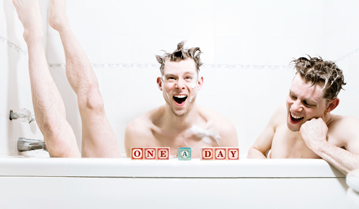

past exhibition |
|||
The One-a-Day ProjectBjorn Bolinder |
|||
|
 In December of 2012, I stumbled upon a post online about a photographer who was finishing what’s known in the photography world as a “365 project.” In a “365,” a photographer will post one photo per day for a full year. The subject matter? Anything. The purpose? To commit to creating something daily. In seeing this photographer’s work (made mostly of surrealistic self-portraits), something came alive inside of me. A spark – an inner “creation-permission slip.” I was instantly enamored with this idea of a committed daily practice with a tangible outcome. And since I’m the only one on my bizarre, ever-shifting schedule, a self-portrait project felt feasible. I wanted to begin immediately. I already had a slew of images to choose from to get the ball rolling because I’d been doing a lot of test-shooting with myself as the subject in an effort to hone my skills. The notion of a full year’s worth didn’t seem conceivable to me, so instead I more loosely set the intention to post one photo per day… for as long as it felt right (hence, “One-a-Day”). I never imagined it would last as long as it did, nor did I anticipate what I might begin to discover throughout the process (and beyond). I posted photos for 115 days solid. After this I took a break, and resumed with more as inspirations arose. All my life I’ve felt sparks of creation, but I was better at seeing them through when I was a child. As the years went by I stopped listening to these creative stirrings, and I fell out of the practice. One of the most important things this project did for me was give me an excuse to create and a daily deadline – no matter what. As I’ve tried to make sense of my world over the years, I’ve been getting progressively better at breathing life into ideas as they come to me. Life just feels better this way. Can an inspiration be a fluke? I believe they arise because we’re meant to birth them (and that it can be quite painful if we don’t). Pretending they were never there doesn’t help. You’ve heard it before, and you’ll hear it again - when you’re passionate about what you’re doing, it doesn’t feel like work. It takes time still, and there might not be an obvious formula for success, but when you’re engaged in what you love, it truly doesn’t feel like work. My hope is that sharing this project will inspire people to make something - to engage in a practice - to ponder, “What do I love so much that when I do it I become lost in it?” – to begin some sort of daily creative practice (even amidst any voices of doubt, judgment, or criticism). At the end of the day, “failure” is a myth. When you strip it of the shame/embarrassment/fear it wears, it’s truly just feedback. Sometimes (dare I say) it’s a miracle – a secret passageway into unmapped territories that you might not discover any other way. So if you knew you couldn’t fail, don’t you ever wonder, “What wants to be expressed through me? What am I here to create?” Bjorn Bolinder is a New York City-based actor-singer-dancer-photographer-teacher-healer. The work presented here is a portion of his “One-a-Day” project. A more complete presentation of this work can be found at: www.findthelightPhotography.com |
|||
exhibition archive |
|||
| 2016 | 2015 | 2014 | 2013 |
| 2011 | 2010 | 2009 | 2008 |